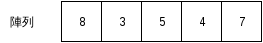
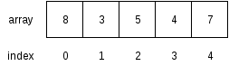

陣列、Vector 和 Slice¶
我們從本章開始，會介紹數種容器 (container)，容器有特定的內部結構，其作用在於裝載資料，此外，容器會提供一些方法，讓我們藉由操作容器，存取其中的資料。傳統上，容器相關的內容多見於介紹資料結構 (data structure) 的書籍，有興趣的讀者可自行查閱相關資料。本章會介紹陣列 (array)、vector 和 slice。
陣列¶
陣列是一種線性的容器，儲存同一種型別的資料，而其長度在生成後即固定下來，陣列中的資料在記憶體中是連續而緊密排列的，如下圖：
陣列的好處在於可快速存取陣列中的資料，因為陣列是透過索引值存取資料，但當要改變陣列長度時，效率則較差，因為要複製陣列中的資料。
建立陣列¶
建立陣列有兩種方式，一種是直接將資料寫在陣列中，如以下範例：
fn main() {
let array = [1, 2, 3, 4, 5];
}
一種則是以 [T; N] (T: 型別，N: 長度) 這種方式初始化陣列。範例如下：
fn main() {
const SIZE: usize = 5;
// [0.0, 0.0, 0.0, 0.0, 0.0]
let mut array: [f64; SIZE] = [0.0; SIZE];
}
C/C++ 可用動態配置記憶體産生陣列，在 Rust 中相對應的動作是使用 vector。Vector 是一種可動態改變大小的線性容器，我們將於下文介紹。
存取陣列中資料¶
陣列使用非負整數作為存取資料的索引 (index)，如下例：
fn main() {
let array = [1, 2, 3];
assert_eq!(array[0], 1);
assert_eq!(array[1], 2);
assert_eq!(array[2], 3);
}
要注意的是，陣列的索引值是從 0 開始，對於程式設計初學者來說，時常會覺得容易搞混。一個簡單的想法是將索引值視為偏離值 (offset)，如下圖：
也可將資料存入陣列，如下例：
fn main() {
let mut array = [0; 3];
array[0] = 1;
array[1] = 2;
array[2] = 3;
assert_eq!(array[0], 1);
assert_eq!(array[1], 2);
assert_eq!(array[2], 3);
}
走訪陣列¶
使用陣列等資料結構的好處之一，在於可以結合迴圈走訪陣列中的資料。如果我們想走訪陣列中的元素，其中一個方法是以陣列的索引值來走訪陣列，如下例：
fn main() {
// Numbers in German
let array = ["eins", "zwei", "drei", "vier", "fünf"];
for i in 0..array.len() {
println!("{}", array[i]);
}
}
或是使用迭代器，如下：
fn main() {
let array = ["eins", "zwei", "drei", "vier", "fünf"];
for element in array.iter() {
println!("{}", element);
}
}
然而，陣列本身不能走訪，所以以下程式碼是錯誤的：
fn main() {
let array = ["eins", "zwei", "drei", "vier", "fünf"];
// Error
for element in array {
println!("{}", element);
}
}
會引發以下錯誤訊息：
error[E0277]: the trait bound `[&str; 5]: std::iter::Iterator` is not satisfied
如果要在走訪陣列時，修改其中的資料，可用索引值走訪陣列，如下：
// Call rand package for random number generation
extern crate rand;
use rand::Rng;
fn main() {
const SIZE: usize = 10;
let mut array = [0; SIZE];
for i in 0..array.len() {
// Set a random number between 1 and 100
array[i] = rand::thread_rng().gen_range(1, 100 + 1);
}
}
如果要使用迭代器，則可修改程式如下：
extern crate rand;
use rand::Rng;
fn main() {
const SIZE: usize = 100;
let mut array = [0; SIZE];
for e in array.iter_mut() {
*e = rand::thread_rng().gen_range(1, 100 + 1);
}
}
其中的 *e 用到參考 (reference) 的概念，簡單地說，參考存的是變數在記憶體中位置，我們透過解參考 (dereferencing) 取得變數本身。我們會於後續章節中介紹參考。
陣列的限制¶
目前 Rust 的陣列有一些使用上的限制，某些函式在陣列長度大於 32 時無法使用。像是下列看起來正常無誤的程式碼：
extern crate rand;
use rand::Rng;
fn main() {
const SIZE: usize = 33; // Watch out when SIZE > 32
const MIN: i32 = 1;
const MAX: i32 = 100;
let mut array: [i32; SIZE] = [0; SIZE];
for i in 0..SIZE {
array[i] = rand::thread_rng().gen_range(MIN, MAX + 1);
}
println!("{:?}", array); // Error when SIZE > 32
}
卻引發下列錯誤：
error[E0277]: the trait bound `[i32; 33]: std::fmt::Debug` is not satisfied
這些 trait 的大小限制是 Rust 內部實作的問題，而不是一般程式語言中陣列的正常行為，Rust 官方文件也有提到這個議題。在 Rust 改善這點前，我們有幾個處理方式，包括 (1) 自行實作相關 trait (2) 避免使用這些方法 (3) 改用 vector。(1) 不是通用的方法，因為針對每個長度，都要重新實作一次，但若有需求，仍可考慮；(2) 則會限制了陣列的使用場合；通常可考慮 (3)。
Vector¶
Vector 是一種可動態改變長度的線性容器，其內部實作也是陣列，但可動態增加長度。由於 vector 使用方式類似陣列，但較陣列靈活，實際上，vector 使用的場合會比陣列多。
建立 vector¶
建立 vector 有兩種方式，一種是以 vec! 巨集直接建立，一種是先建立空的 vector 後再陸續加入資料。
以下程式以 vec! 巨集建立 vector：
fn main() {
let vec = vec![1, 2, 3];
}
以下程式先建立 vector 後，再加入資料：
fn main {
/* Type inference works here,
so we don't explicitly declare
the type of vec. */
let mut vec = Vec::new(); // vec<i32>
// Append data into the tail of the vector
vec.push(1);
vec.push(2);
vec.push(3);
}
push 的概念是，從 vector 尾端附加一個新的元素，就像是在一列火車尾端掛載一節車箱般。Rust 的 vector 從尾端加入資料的效率相當好，可視為常數時間。
註：以演算法的術語來說，為 amortized O(1)。
存取 vector 中的資料¶
和陣列類似，vector 也是以非負整數做為索引。見以下範例：
fn main() {
let vec = vec![1, 2, 3];
assert_eq!(vec[0], 1);
assert_eq!(vec[1], 2);
assert_eq!(vec[2], 3);
}
同樣地，也可以存入資料。如下例：
fn main() {
let mut vec = vec![1, 2, 3];
vec[1] = 99; // Feed data into vector
assert_eq!(vec[0], 1);
assert_eq!(vec[1], 99);
assert_eq!(vec[2], 3);
}
走訪 vector¶
如果要走訪 vector，可以使用索引，如下例：
fn main() {
let vec = vec![1, 2, 3];
for i in 0..(vec.len()) {
println!("{}", i);
}
}
或是使用迭代器，如下例：
fn main() {
let vec = vec![1, 2, 3];
for element in vec.iter() {
println!("{}", element);
}
}
如果需要在走訪 vector 改變其值，可以用索引走訪：
fn main() {
let mut vec = vec![1, 2, 3];
for i in 0..vec.len() {
vec[i] = vec[i] * vec[i];
}
assert_eq!(vec[0], 1);
assert_eq!(vec[1], 4);
assert_eq!(vec[2], 9);
}
或是使用迭代器：
fn main() {
let mut vec = vec![1, 2, 3];
for element in vec.iter_mut() {
*element = (*element) * (*element);
}
assert_eq!(vec[0], 1);
assert_eq!(vec[1], 4);
assert_eq!(vec[2], 9);
}
同樣地，這裡用到解參考。
操作 vector¶
以下用實例來介紹 vector 的操作：
fn main() {
// Declare an empty vector
let mut vec = Vec::new();
// Append data to the tail of the vector
vec.push(1);
vec.push(2);
vec.push(3);
// Get the length of the vector
assert_eq!(vec.len(), 3);
// Pop data from the tail of the vector
let popped = vec.pop().unwrap();
assert_eq!(popped, 3);
assert_eq!(vec, vec![1, 2]);
// Insert data into the middle of the vector
vec.insert(1, 99);
assert_eq!(vec, vec![1, 99, 2]);
// Remove data from the middle of the vector
let removed = vec.remove(1);
assert_eq!(removed, 99);
}
由本例，可以看到 vector 可動態改變長度，而不需手動進行資料的搬移。然而，vector 內部仍然是數列，除了從尾端增加資料外，vector 在增減長度時會牽涉到資料的拷貝，若有大量資料搬移的需求，可能要考慮改用其他的容器。
vec.pop().unwrap() 這個部分的程式碼可能會令讀者困惑，這是 Rust 的特殊容器 Option。該容器的用途是為了處理錯誤情形，在從 vector 尾端取出資料時，有可能取出的值為空值，故 Rust 將值包裝在該容器中。這部分牽涉到 enum 的概念，將於後續章節中說明。
Slice¶
Slice 是一種用來檢視陣列或 vector 的元素的型別，其內部包括指向陣列或 vector 的參考和原本的陣列或 vector 的長度。由於 slice 使用參考，故不需要拷貝陣列或 vector 的資料。簡單地說，參考不存放資料本身，而存放指向資料的記憶體位置，透過參考，可間接取得資料。如下圖：

若讀者對參考覺得陌生，也不用擔心，本書後續的章節會談到參考的概念，可之後再回頭檢視這裡的內容。
建立 slice¶
建立 slice 的方法是先建立陣列或 vector 後，再建立 slice，如下：
fn main() {
/* Internally, it works as this:
let _slice = [1, 2, 3, 4, 5];
let slice = &_slice; */
let slice = &[1, 2, 3, 4, 5];
}
有 C/C++ 經驗的讀者可能會覺得困惑，為什麼我們可以對值取參考。其實，在內部，Rust 會建立一個暫時變數，再將其參考指向程式設計者指定的變數。
存取 slice 中的資料¶
如同陣列，slice 也可以用索引取出資料，如下：
fn main() {
let slice = &[1, 2, 3];
assert_eq!(slice[0], 1);
assert_eq!(slice[1], 2);
assert_eq!(slice[2], 3);
}
若設定適當的可變性，slice 也可寫入資料，如下：
fn main() {
let slice = &mut [1, 2, 3];
// Write data into slice
slice[1] = 99;
assert_eq!(slice[0], 1);
assert_eq!(slice[1], 99);
assert_eq!(slice[2], 3);
}
走訪 slice¶
Slice 的其中一個作用，在於可自動轉為迭代器，範例如下：
fn main() {
let array = ["eins", "zwei", "drei", "vier", "fünf"];
// It works when the array size <= 32
for element in &array {
println!("{}", element);
}
}
如果 slice 是由陣列而來，而原陣列元素個數在超過 32 個時，此方法不能使用，見前文說明。經筆者測試，若 slice 是由 vector 而來，則沒有上述限制。
設定好可變性後，也可以在走訪 slice 時改變其值，範例如下：
extern crate rand;
use rand::Rng;
fn main() {
const SIZE: usize = 10;
let mut array = [0; SIZE];
for element in &mut array {
*element = rand::thread_rng().gen_range(1, 100 + 1);
}
}
同樣的，若 slice 是由陣列而來，同樣會受到長度限制的問題。
(案例選讀) Insertion Sort¶
在本節中我們練習實作 insertion sort。Insertion sort 是一種簡單易懂的排序演算法 (sorting algorithm)，對於小型的資料效率佳。實作方式有兩種，一種是額外建立一個串列，再將資料依序插入該串列中，一種則是原地修改陣列，本節採用後者。
陣列在排序前如下示意圖 (摘自維基百科)：

而排序後如下圖 (摘自維基百科)：

將 insertion sort 寫成虛擬碼如下：
Let A a zero-based array with size n
for i from 1 to n - 1 {
x = A[i]
j = i
while j > 0 and A[j-1] > x {
A[j] = A[j-1]
j = j - 1
}
A[j] = x
}
同樣地，我們的範例程式碼用到 rand 套件，需於 Cargo.toml 中加入相關內容：
[dependencies]
rand = "0.3"
這裡附上範例程式碼，以供參考：
// Call rand library
extern crate rand;
use rand::Rng;
fn main() {
// Initialize variables
const SIZE: usize = 10;
let mut array: [i32; SIZE] = [0; SIZE];
// Set array elements with random integers
for i in 0..SIZE {
array[i] = rand::thread_rng().gen_range(1, 100 + 1);
}
// Print out unsorted array
print!("Before sort: ");
display_slice(&array);
// Insertion sort.
// Modify the array in-place.
for i in 1..(array.len()) {
let x = array[i]; // Temp data
let mut j = i;
while j > 0 && array[j-1] > x {
array[j] = array[j-1]; // Move element one step
j -= 1;
}
array[j] = x; // Put back temp data
}
// Print out sorted array
print!("After sort: ");
display_slice(&array);
}
// Function to print out array with arbitrary size
fn display_slice(slice: &[i32]) {
for i in 0..slice.len() {
print!("{}", slice[i]);
if i < slice.len() - 1 {
print!(", ");
}
}
println!("");
}
在這裡，我們暫不講解關於函式的部分，而留在後續章節中另行介紹。簡單地說，這個函式不受到陣列長度的限制，可在終端機印出 slice 內的資料。對於有 C 程式設計經驗的讀者，會發現該函式接收 slice 後可從 slice 得到其長度，在內部，Rust 的 slice 和 C 的陣列不同，帶有長度的資訊。
除了 insertion sort 外，還有一些排序演算法可以用陣列實作，舉例如下：
- Bubble sort
- Selection sort
- Bucket sort
讀者有興趣的話，可自行試著練習看看這些演算法。